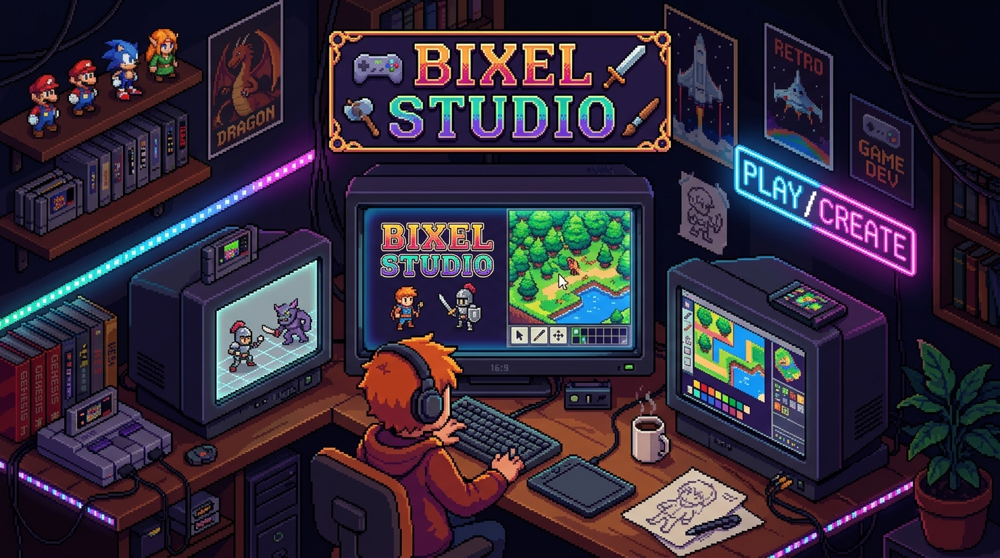
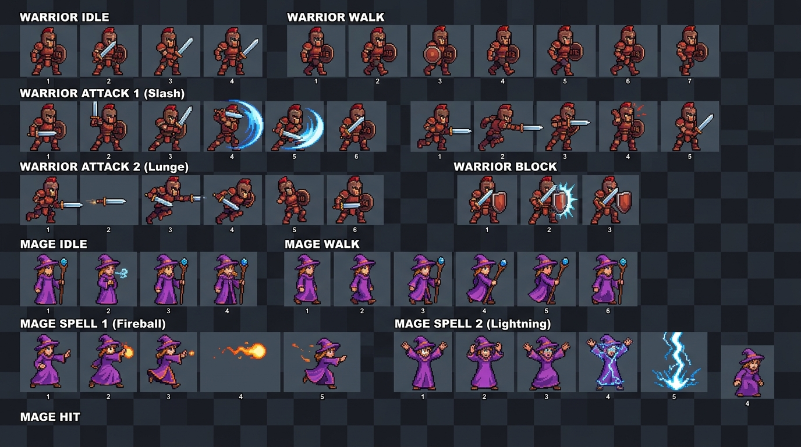
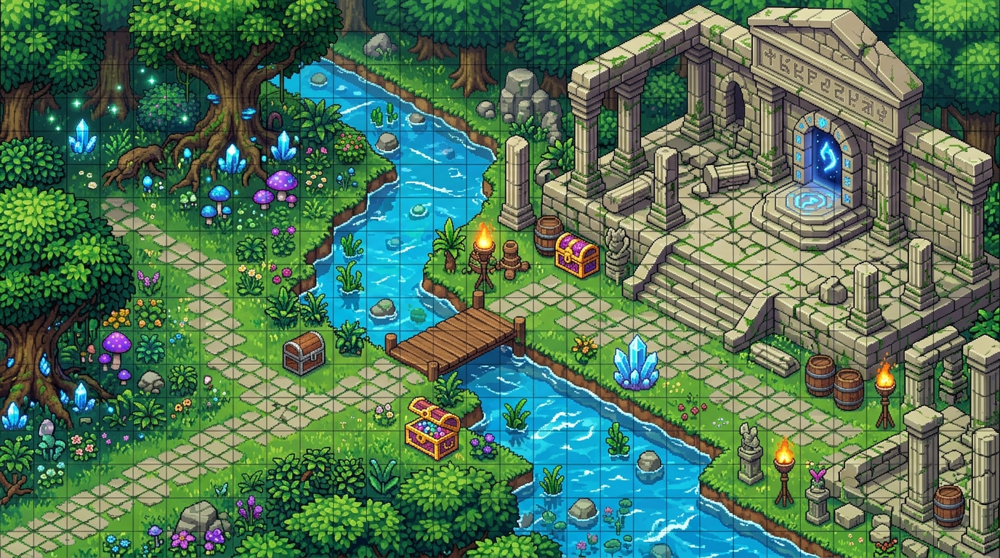
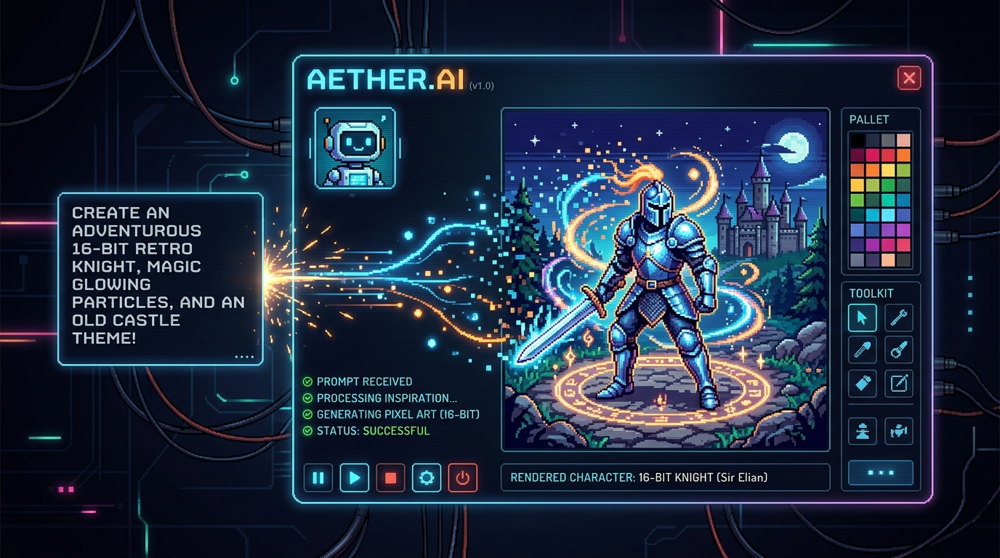

Introduction
Welcome to Bixel Studio, the native macOS 2D game-asset and pixel art studio designed for speed, precision, and tactile creative joy.
What is Bixel Studio?
Bixel Studio brings the fluid elegance of modern Apple design to retro game asset creation. Built with a lightweight SwiftUI frontend, hardware-accelerated MetalKit rendering, and an ultra-fast headless Rust core, Bixel Studio delivers 60fps pan and zoom alongside pixel-perfect compositing.
Whether you are sketching a 16×16 character sprite, choreographing a smooth combat animation, or mapping out an entire RPG dungeon, Bixel provides dedicated workflows without context switching.
System Requirements
- Operating System: macOS 13.0 (Ventura) or later (macOS Sonoma / Sequoia recommended).
- Hardware: Apple Silicon (M1/M2/M3/M4) or Intel Mac with Metal support.
- Toolchain: Xcode 15.0+, Rust toolchain (cargo), and XcodeGen.
Quick Start
Get Bixel Studio up and running on your Mac in minutes using the automated one-line start script.
Running in One Script
Launch the app directly from your terminal using the automated script located in the repository root:
This script executes the complete setup sequence automatically:
- Verifies that the Rust toolchain (cargo) and XcodeGen are installed.
- Sets up your local development environment file (.env.dev) if missing.
- Generates the Xcode project file (Bixel.xcodeproj).
- Opens the project in Xcode, ready to hit Cmd + R to run.
./scripts/start.sh --run
The Interface
A distraction-free, dark workspace engineered to keep your artwork front and center.

site/assets/screenshots/interface-overview.png
Workspace Zones
| Zone | Location | Function |
|---|---|---|
| Top Bar | Top Edge | Project title, active zoom level, Undo/Redo triggers, and AI Assistant toggle. |
| Tool Rail | Left Edge | Single-click access to Pencil, Brush, Eraser, Line, Rectangle, Bucket Fill, and Eyedropper. |
| Canvas View | Center | Metal-accelerated pixel canvas supporting infinite pan, smooth zoom, and pixel grid snapping. |
| Timeline Dock | Bottom Edge | Animation frame reel, cel duration controls, Onion Skin toggle, and real-time playback. |
| Inspector Panel | Right Edge | Layer stack, blend modes, Color Disc palette, and tilemap inspector drawers. |
Gestures & Shortcuts
Fly through your workflow using fluid trackpad gestures and familiar single-key shortcuts.
Essential Shortcuts
| Action | Shortcut | Description |
|---|---|---|
| Pencil Tool | B or P | Selects the single-pixel precision drawing pencil. |
| Eraser | E | Toggles the pixel eraser. |
| Bucket Fill | G | Flood fills contiguous color regions with active palette color. |
| Eyedropper | I or Option + Click | Samples pixel color directly under cursor. |
| Play / Pause Animation | Spacebar | Toggles playback of active animation loop. |
| Step Backward / Forward | , and . | Navigates one frame backward or forward along timeline. |
| Undo / Redo | Cmd + Z / Cmd + Shift + Z | Traverses non-destructive action history. |
| Toggle AI Panel | Cmd + K | Opens or closes the AI Studio Assistant drawer. |
Drawing Tools & Palettes
Everything you need to craft iconic sprites with authentic retro color fidelity.

site/assets/screenshots/color-palette.png
Built-in Palette Presets
- DB32 (DawnBringer 32): The beloved versatile 32-color palette for rich 16-bit RPGs and platformers.
- PICO-8: The classic 16-color fantasy console palette, vibrant and high-contrast.
- Game Boy (4-shade DMG): Authentic 4-color monochrome green tints for authentic 8-bit handheld nostalgia.
Layers & Cels
Organize complex game characters, backgrounds, and visual effects with non-destructive layers.
Understanding Cels
In traditional animation and Aseprite terminology, an individual image at the intersection of a Layer and a Frame is called a Cel.
Each layer can have independent opacity, visibility toggles, and blend modes (Normal, Multiply, Screen, Overlay). Changes to one layer never contaminate the pixels of underlying layers.
Animation Assist
Powerful timeline controls, onion skinning, and frame tagging make frame-by-frame animation effortless.

site/assets/screenshots/animation-timeline.png
Onion Skinning
Turn on Onion Skinning (O) to see ghosted outlines of previous frames (tinted red) and upcoming frames (tinted blue). You can configure the number of ghosted frames and their opacity to achieve pitch-perfect motion curves.
Tilemap Designer
Design interactive 2D levels and export directly to Tiled JSON format for Godot, Unity, or custom engines.

site/assets/screenshots/tilemap-editor.png
Features
- Autotiling: Automatically calculate corners, edges, and inner turns for terrain, cliffs, and water.
- Layer Hierarchy: Separate collision boundaries, background terrain, decorative foliage, and entity spawn markers.
- Tiled Interop: Load and save directly to standard Tiled JSON maps without data loss.
AI Studio Assistant
Embed an intelligent assistant powered by OpenRouter or ChatGPT Codex right inside your creative process.

site/assets/screenshots/ai-panel.png
AI Skills & Slash Commands
Type / in the AI prompt box to trigger dedicated game-asset skills:
| Skill | Function |
|---|---|
/spritesheet |
Generates a multi-frame character animation grid, sliced into frames. |
/next_frame |
Inspects current canvas cel and predicts the next animation frame. |
/color_reduce |
Quantizes an imported image into strict retro palette limits (e.g. 16 colors). |
/remove_bg |
Detects and removes background pixels to isolate sprites cleanly. |
Export & Pipelines
Export game-ready assets directly into your preferred game engine.
Supported Export Formats
- Spritesheet PNG + JSON Atlas: Generates packed texture atlas with frame coordinate metadata.
- Animated GIF: Looping animation preview ready for Discord, Twitter/X, or portfolio showcases.
- PNG Sequence: Numbered individual frames (frame_000.png, frame_001.png).
- Tiled JSON Map: Native level export ready to drag straight into Godot 4 or Unity.